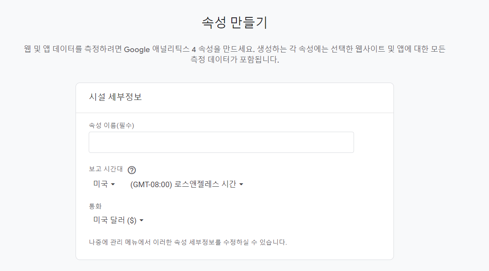
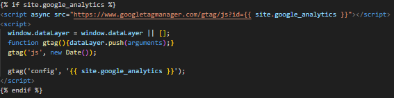
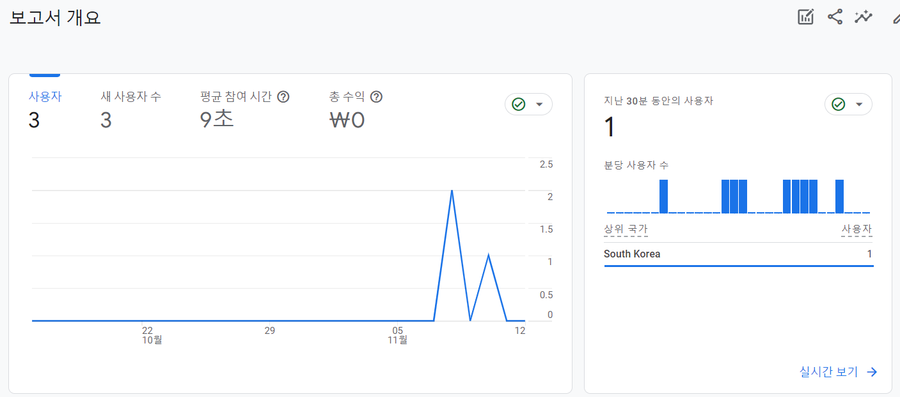

블로그 뿐만 아니라 어떤 웹페이지에 방문하는 사람들에 대한 통계 자료가 필요한 경우가 있을 수 있다. Google Analytics를 사용해 블로그를 방문한 사람들에 대한 통계 자료를 확인할 수 있도록 하는 방법을 포스팅했다.
1. Google Analytics 계정 생성 및 속성 설정
-
Google Analytics웹사이트로 이동하여 계정을 생성한다.
-
속성을 생성한다. 
2. Google Analytics 코드 활성화 또는 추적코드 추가
-
코드에서 google analytics에 대한 코드가 있으면 활성화 시키고 없다면 속성 생성 후 받은 추적 코드를 이식한다.
- 나의 테마의 경우 README.md 파일에 google analytics 사용법에 대한 내용이 있었고 _config.yml에 해당 내용을 추가했다.
texture: analytics_id: '< YOUR ID >' - google analytics 사용에 대한 내용이 없다면 _includes 폴더 아래의 head.html에 들어가서 </head>태그 바로 앞에 해당 추적 코드를 붙여넣는다. 
- 나의 테마의 경우 README.md 파일에 google analytics 사용법에 대한 내용이 있었고 _config.yml에 해당 내용을 추가했다.
3. Google Analytics로 보고서 확인하기
- 설정이 완료되었다면 보고서 탭을 눌러 통계 정보를 확인한다. 